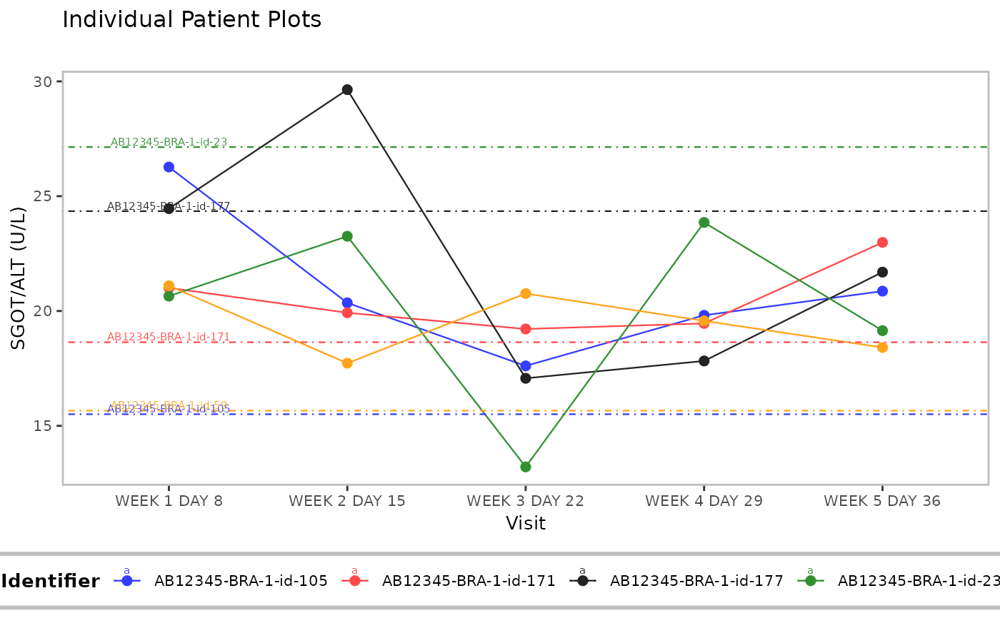
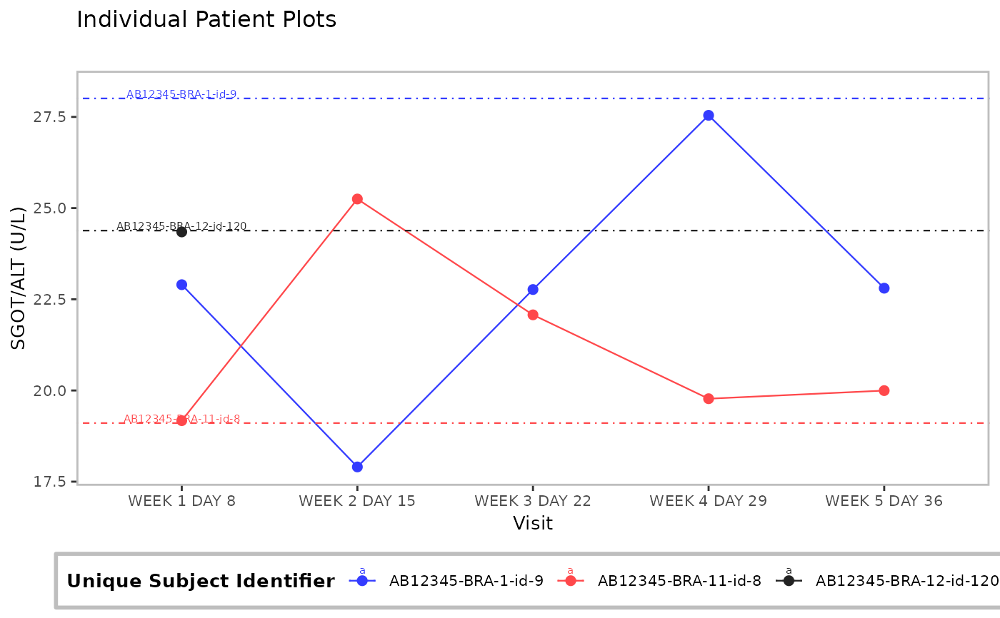

![[Stable]](figures/lifecycle-stable.svg)
Line plot(s) displaying trend in patients' parameter values over time is rendered. Patients' individual baseline values can be added to the plot(s) as reference.
Usage
g_ipp(
df,
xvar,
yvar,
xlab,
ylab,
id_var = "USUBJID",
title = "Individual Patient Plots",
subtitle = "",
caption = NULL,
add_baseline_hline = FALSE,
yvar_baseline = "BASE",
ggtheme = nestcolor::theme_nest(),
plotting_choices = c("all_in_one", "split_by_max_obs", "separate_by_obs"),
max_obs_per_plot = 4,
col = NULL
)Arguments
- df
(
data.frame)
data set containing all analysis variables.- xvar
(
string)
time point variable to be plotted on x-axis.- yvar
(
string)
continuous analysis variable to be plotted on y-axis.- xlab
(
string)
plot label for x-axis.- ylab
(
string)
plot label for y-axis.- id_var
(
string)
variable used as patient identifier.- title
(
string)
title for plot.- subtitle
(
string)
subtitle for plot.- caption
(
string)
optional caption below the plot.- add_baseline_hline
(
flag)
adds horizontal line at baseline y-value on plot whenTRUE.- yvar_baseline
(
string)
variable with baseline values only. Ignored whenadd_baseline_hlineisFALSE.- ggtheme
(
theme)
optional graphical theme function as provided byggplot2to control outlook of plot. Useggplot2::theme()to tweak the display.- plotting_choices
(
string)
specifies options for displaying plots. Must be one of"all_in_one","split_by_max_obs", or"separate_by_obs".- max_obs_per_plot
(
integer(1))
number of observations to be plotted on one plot. Ignored ifplotting_choicesis not"separate_by_obs".- col
(
character)
line colors.
Functions
g_ipp(): Plotting function for individual patient plots which, depending on user preference, renders a single graphic or compiles a list of graphics that show trends in individual's parameter values over time.
See also
Relevant helper function h_g_ipp().
Examples
library(dplyr)
library(nestcolor)
# Select a small sample of data to plot.
adlb <- tern_ex_adlb %>%
filter(PARAMCD == "ALT", !(AVISIT %in% c("SCREENING", "BASELINE"))) %>%
slice(1:36)
plot_list <- g_ipp(
df = adlb,
xvar = "AVISIT",
yvar = "AVAL",
xlab = "Visit",
ylab = "SGOT/ALT (U/L)",
title = "Individual Patient Plots",
add_baseline_hline = TRUE,
plotting_choices = "split_by_max_obs",
max_obs_per_plot = 5
)
plot_list
#> [[1]]

#>
#> [[2]]

#>